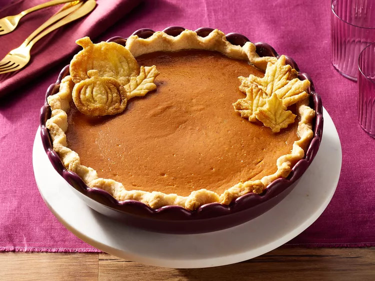

Pumpkin Pie

Description
Perfect for Thanksgiving Day. Or, really, any day!
Ingredients
- 15 oz can pumpkin puree
- 14 oz can Eagle Brand Sweetened Condensed Milk
- 2 large eggs
- 1 teaspoon ground cinnamon
- 1/2 teaspoon ground ginger
- 1/2 teaspoon ground nutmeg
- 1/2 teaspoon salt
- 1 (9 inch) unbaked pie crust
Directions
- Step 1
Gather all ingredients and preheat the oven to 425
degrees F (220 degrees C).
- Step 2
Whisk pumpkin puree, condensed milk, eggs, cinnamon, ginger,
nutmeg, and salt together in a medium bowl until smooth.
- Step 3
Pour into crust.
- Step 4
Bake in the preheated oven for 15 minutes.
- Step 5
Reduce the oven temperature to 350 degrees F
(175 degrees C) and continue baking until a knife inserted 1 inch from
the crust comes out clean, 35 to 40 minutes. Let cool before serving.
- Step 6
Enjoy!